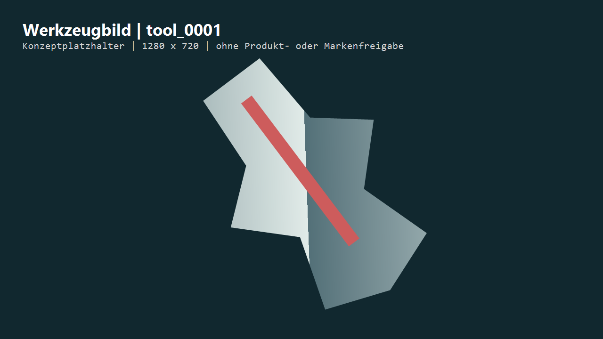
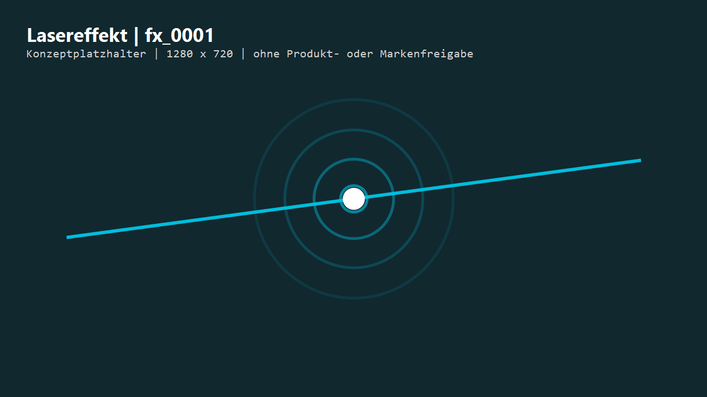
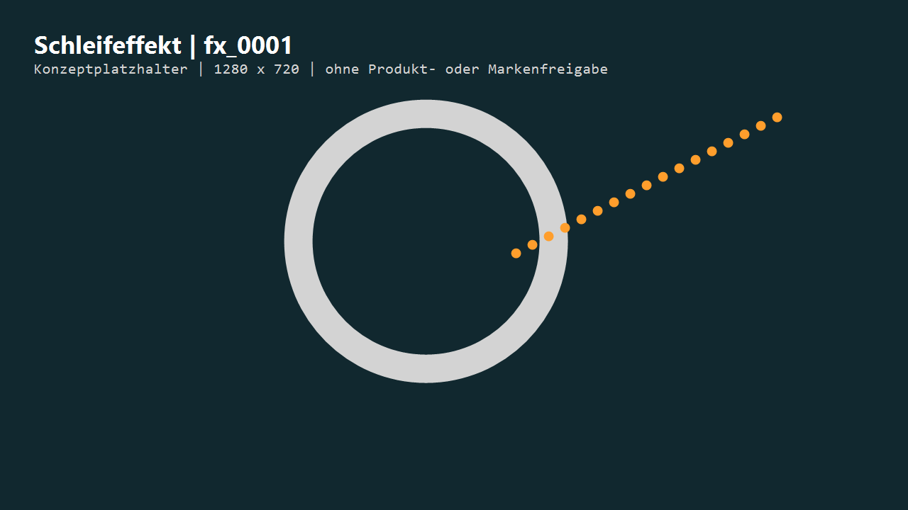
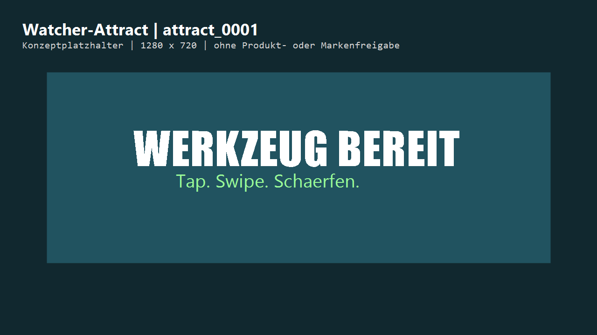

Werkzeugbild
images/tools/tool_0001.pngFeiner Bohrer, Zustand dull; Manifest ordnet Tap/Laser zu.
Lokale Konzeptgalerie fuer das Vollmer Messe-Game. Alle Grafiken und Klaenge sind abstrahierte Platzhalter ohne Marken- oder Produktfreigabe.

images/tools/tool_0001.pngFeiner Bohrer, Zustand dull; Manifest ordnet Tap/Laser zu.

animations/laser/fx_0001.pngPNG-Textur fuer einen konfigurierbaren Trefferimpuls.

animations/grind/fx_0001.pngPNG-Textur fuer Schleifscheibe und gerichtete Funken.

images/ui/attract_0001.pngKonzeptbild fuer eine spaetere lokale Querformat-Loopsequenz.
audio/laser/sfx_0001.wavaudio/grind/sfx_0001.wavaudio/music/music_0001.wavaudio/ui/sfx_0001.wav